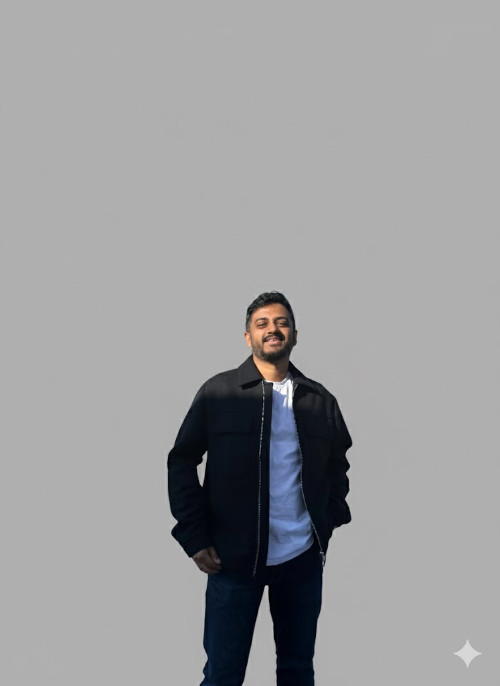

Hello, I’m Adnan Ahmed Khan.
Systems.
People.
Ownership.
Technical Lead at HR-ON. I turn complex problems into dependable software and help teams own what they build.

“I build it. I run it.”
- 9+
- Years building software
- 15
- Team members led at HR-ON
- 5K+
- Outlets on the aggregator I built
Keeping systems alive / Team coordination / Removing blockers / Streamlining processes / Optimizing systems & team delivery
Engineering with impact.
Selected work across commerce, infrastructure, identity, and payments. The contribution, the technology, and the result.
E-commerce at scale
Engineered an e-commerce aggregator supporting more than 5,000 outlets, alongside cloud infrastructure built with Kubernetes and AWS.
A smoother path to production
Led the migration to container-based deployment and implemented CI/CD pipelines to make releases more dependable.
Visibility into running systems
Established monitoring with Prometheus, Grafana, and the EFK stack, bringing metrics and logs into the operational workflow.
Access, managed centrally
Developed a user access management platform with Keycloak, supporting authentication and access for more than 1,000 users.
The services behind the wallet
Developed wallet microservices in Go and Flask and integrated five payment gateways for a platform serving more than one million users.
Clear direction.
Shared ownership.
Good engineering is a team effort. My role is to connect the people, decisions, and systems that make it work.
Make the complex clear.
I connect technical and non-technical stakeholders, translating business needs into a direction the team can act on.
Alignment → DecisionsHelp people do their best work.
I bring developers, QA, and business stakeholders together. Mentoring and clear communication are part of the work, every day.
Trust → CollaborationOwn the whole journey.
From architecture and APIs to deployment and monitoring, I stay connected to what we build and how it runs.
Architecture → ProductionA career in building.
9+ years of building scalable cloud-native solutions across e-commerce, fintech, and HR technology sectors
At HR-ON since April 2025.
Key Responsibilities:
- Lead a team of 15 and guide end-to-end technical direction across backend, infrastructure, and platform systems
- Design and manage AWS cloud infrastructure, optimizing performance, cost, and availability
- Embed compliance and auditability into systems, supporting GDPR and ISAE 3000 requirements
- Improve system reliability through monitoring, alerting, and incident response
- Collaborate with stakeholders to align technical strategy with business objectives
Key Responsibilities:
- Designed and implemented AWS-based infrastructure supporting core platform services
- Led migration from legacy deployment processes to container-based deployments
- Implemented Terraform-based infrastructure as code for consistent environments and improved IT continuity
- Contributed to security improvements and supported compliance efforts
Key Responsibilities:
- Led cross-functional team of 10+ engineers in Agile development practices
- Orchestrated Kubernetes infrastructure setup using Terraform and CloudFormation
- Designed and implemented 20+ RPA workflows for operational efficiency
- Developed User Access Management platform serving 1K+ users with KeyCloak
- Engineered eCommerce aggregator platform supporting 5K+ outlets
- Established monitoring systems with Grafana, Prometheus, and EFK stack
Earlier chapters / 2015–2020
Food Angels EstoniaDevOps EngineerOct 2020 - Dec 2020
Key Responsibilities:
- Led migration to container-based deployment architecture
- Developed Docker configurations and deployment scripts
- Implemented CI/CD pipelines for seamless releases
- Optimized deployment processes reducing errors and downtime
DeligramDevOps EngineerSep 2019 - Jul 2020
Key Responsibilities:
- Collaborated with CTO on microservices architecture migration
- Implemented CI/CD pipelines in GitLab for zero-downtime releases
- Designed ETL processes using Apache Airflow for data processing
- Managed Google Kubernetes Engine (GKE) clusters
PathaoSoftware EngineerOct 2018 - Aug 2019
Key Responsibilities:
- Developed microservices in Python (Flask) and Go for wallet system
- Integrated 5 different payment gateways for seamless transactions
- Implemented automated deployment and monitoring systems
- Optimized system performance for high-volume transaction processing
Green and Red TechnologiesSoftware EngineerMay 2015 - Sep 2018
Key Responsibilities:
- Refactored Ad SDK for Android applications optimizing ad loading performance
- Developed 3 MVP Android applications with comprehensive RESTful APIs
- Implemented efficient data structures and algorithms for mobile optimization
- Collaborated with cross-functional teams on product development lifecycle
More than a job title.
I love solving problems and bringing visions to life. My approach is simple: I build it, I run it.
For more than nine years, I’ve built and supported technology projects, with a focus on backend engineering and DevOps. Based in Odense, Denmark, I’m a Technical Lead at HR-ON, promoted in April 2026 after joining as a Cloud Engineer in April 2025. I lead a team of 15 and guide technical direction across backend, infrastructure, and platform systems. I’ve worked with international teams, supporting small startups and large enterprises alike.
My experience spans e-commerce, payments, HR solutions, and accounting software. I design and deliver web applications, web services, and APIs, bringing together system design, Python, CI/CD, Docker, Kubernetes, and cloud-native deployment on platforms such as AWS.
I’ve earned the Certified Kubernetes Application Developer (CKAD), Certified ScrumMaster (CSM), and Certified Scrum Product Owner (CSPO) credentials. I lead cross-functional teams of developers, QA professionals, and business stakeholders, connecting technical decisions with business needs through Agile delivery and technical project management.
My career includes roles at Pathao, Deligram, and Green and Red Technologies, as well as collaboration with Estonian startups on the transition to container-based deployment and cloud automation. Previously, as a Principal Software Engineer at RedDot Digital Limited, I worked across backend architecture, development, and deployment. I help teams navigate both microservices and monolithic architectures, choosing approaches that suit the product.
I value clear communication between technical and non-technical stakeholders and a collaborative working environment. Engineering ownership, stakeholder management, automation, and reliable delivery are central to how I work.
Outside work, I’ve explored 13 countries and counting. My adventures include hiking and trekking, ziplining, paragliding, parasailing, swimming with sharks, kayaking, and running a half marathon. Travel and lifelong learning keep me curious.
Top skills
- Kubernetes
- Python
- Continuous Integration & Delivery (CI/CD)
- Amazon Web Services (AWS)
- Technical Project Management
Always a student.
Industry-recognized credentials demonstrating expertise in cloud technologies, project management, and emerging tech trends.
Certified Kubernetes Application Developer
CKADProvider: The Linux Foundation
Duration: Oct 2023 - Oct 2026
ID: LF-693zq63w92
Certified ScrumMaster
CSMProvider: Scrum Alliance
Duration: Mar 2023 - Feb 2025
ID: 001491305
Certified Scrum Product Owner
CSPOProvider: Scrum Alliance
Duration: Apr 2023 - Apr 2025
ID: 001491305
Google Project Management Professional
2024Provider: Google
Completion: Jul 2024
ID: D9894SMXFSHV
Introduction to Generative AI Learning Path
2024Provider: Google Cloud
Completion: May 2024
ID: 6EEU7XZBTJ24
Education
Advanced studies in computer science with focus on software engineering, algorithms, and system design. Developed expertise in theoretical foundations and practical applications of modern computing technologies.
Comprehensive study of computer engineering principles, including hardware-software integration, programming, system architecture, and engineering fundamentals that laid the foundation for my technical career.
Science stream with strong foundation in mathematics, physics, and chemistry. Served as Vice President of Publication, Dhaka College Science Club, developing leadership and organizational skills.
Knowledge is better shared.
Contributing to the tech community through mentorship and social impact initiatives
Mentor
Giving back to the community by mentoring aspiring Software Developers. Completed 375 minutes of mentoring time across 12 sessions.
Mentor
Mentored aspiring developers in the Google Developer Exchange program. Guided 5+ teams from the Top 100 of the Google Developer Student Clubs Solution Challenge.
Artist Volunteer
Volunteered as an artist creating art to raise funds for underprivileged children. Organized art exhibitions with proceeds directly benefiting children's education and healthcare needs.
Impact: Funds raised supported education and healthcare for underprivileged children through artistic contributions and exhibition organization.
Awards
Professional recognition for outstanding performance, leadership, and technical excellence.
RedDot Champion Award
2023
Highest recognition for exceptional leadership and technical contributions at RedDot Digital Limited.
Commander in Chief Award
2022
Leadership excellence award recognizing outstanding team management and project delivery.
Spotlight Award
Q3 2021
Quarterly recognition for innovative solutions and exceptional performance in cloud infrastructure.
National Hackathon Winner
Dec 2014
Led team "gravitybd" to victory in a 36-hour hackathon with 1,675 participants across 288 teams. Won first place in Traffic Jam problem category and achieved best overall team recognition among all categories.
A little further
from home.
Thirteen countries, plenty of perspectives. Based in Denmark, rooted in Bangladesh, and always curious about what’s next.
-
01
🇩🇰
Europe
Denmark
Current home · Odense -
02
🇧🇩
Asia
Bangladesh
Where I’m from -
03
🇮🇳
Asia
India
Visited -
04
🇲🇾
Asia
Malaysia
Visited -
05
🇳🇵
Asia
Nepal
Visited -
06
🇹🇭
Asia
Thailand
Visited -
07
🇲🇻
Asia
Maldives
Visited -
08
🇮🇩
Asia
Indonesia
Visited -
09
🇫🇷
Europe
France
Visited -
10
🇵🇱
Europe
Poland
Visited -
11
🇸🇰
Europe
Slovakia
Visited -
12
🇭🇺
Europe
Hungary
Visited -
13
🇦🇹
Europe
Austria
Visited
A thought I travel with“I believe in lifelong learning, and travel has been one of my greatest teachers.”
A little outside
my comfort zone.
In the air, in the water, or out on a trail. These are some of the experiences that keep me curious and challenge me to go further.
Good things start
with a conversation.
Systems to build, ideas to explore, or a shared interest in engineering. I’d love to hear from you.
iamkhanadnan@gmail.comFrequently Asked Questions
Let's Connect
Phone
Location
Odense, Denmark (Hybrid)
Current Role
Technical Lead at HR-ON